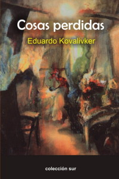

Por Emilio Comas Paret.

Hace unos pocos días fui invitado a presentar un libro en La Casa del Alba.
Dicho texto, titulado “El mar por el fondo” fue Premio Biblioteca Breve de Narrativa 2014, convocado por el Fondo Literario “Eduardo Kovalivker”, de Buenos Aires, Argentina; y para escritores cubanos menores de 30 years.
Luego de la presentación y hablando con Alex Pausides del Festival Internacional de Poesía de La Habana y de la Colección Sur, recordé que el año pasado había sido publicado por la propia Colección Sur un poemario de la autoría de Kovalivker, and then, en cuanto llegué a casa, le fui arriba al librero y encontré “Cosas perdidas”
El poemario “Cosas Perdidas” de Eduardo Kovalivker, es precisamente un libro de la madurez.
En los años transcurridos, el autor se ha dado cuenta de la obsolescencia de las cosas materiales, su finitud, la aridez, la despiadada continuidad que las hace avanzar aplastando, destrozando, y sin mirar atrás.
Y ha descubierto que existe otro mundo más pleno, posible, tangible, y que vive en su interior.
Un mundo íntimo, pletórico de espiritualidad, de sensibilidad humana, de razones éticas.
Y nos lo quiere mostrar.
Anda pregonando de esquina en esquina que ese, su mundo interior, es más que posible si la voluntad, su voluntad, se impone.
Y de ahí estos poemas, que alejados del romanticismo trasnochado, o de un lirismo edulcorado, bebe de las mejores fuentes de antaño, y elabora un producto poético acorde con las necesidades y los reclamos de esta convulsa época, nueva época que ha aparecido de improviso, sorprendiendo a muchos, despertando a todos, implantando su señorío ante una cultura decadente y absurda, y en alto grado de descomposición.
La primera parte del texto, titulada “Las horas que quedan” refleja el eterno lamento del homo sapiens por un amor perdido, y como es de esperar, magnificado en el recuerdo. Al final también asume una reflexión sobre los hijos y su devenir humano.
La segunda parte titulada “Las horas dolorosas de la Patria” es de un alto contenido social. Versos como “el hambre de los pobres y la mordaza en la mente” recuerdan a Martí en su “Ser cultos para ser libres” o “Ser próspero es la única manera de ser bueno”. El poema “Hermanos” recuerda la idea también martiana de “Con los pobres de la tierra quiero yo mi suerte echar…”
Hay además un canto al envejecimiento como destino manifiesto del ser humano, a sus pérdidas a través de los años, pero siempre mostrando un sesgo de esperanza abierta para aprovechar “los ímpetus y los bríos” cuando estos ocasionalmente llegan.
La tercera parte titulada “Coloquio de fantasmas” rememora a grandes poetas como Neruda, Miguel Hernández, García Lorca, Borges, Almafuerte, Bécquer; en un diálogo continuo entre el autor y los grandes payadores latinoamericanos. Para mi gusto hubiera titulado este compendio “Coloquio con fantasmas”.
La parte número cuatro titulada “Ríos de sangre” habla del holocausto judío, de la historia del pueblo hebreo desde el Antiguo Testamento, de Moisés y las Tablas de las Leyes, in the end, el personaje principal de este capítulo es el pueblo judío en su larga y errante búsqueda a través del mundo y de la historia.
Un pensamiento recorre este fragmento y se da a través de unos versos que dicen: “Que unos hablen de odios y guerras, nosotros hablaremos de amor y de trabajo”.
La quinta parte titulada “Siempre. Poemas y canciones” es un canto contra las guerras. Hay una alegoría a la Roma antigua, un poema a la tristeza, un requiebro contra la vejez y la decadencia que provoca.
La parte sexta titulada “Últimos poemas” habla de México, de la expropiación de sus tierras norteñas por el imperialismo norteamericano, del regreso de los mexicanos a sus antiguos predios, pero ahora en forma de trabajadores agrícolas. Habla también de los judíos en la Argentina, arremete contra el militarismo, hace un elogio a la Cuba revolucionaria y su lucha, aborda la soledad del gaucho en la extensa pampa, vuelve a la terrible realidad del devenir en la historia del pueblo judío, de la ascensión de Obama al poder y la expectativa que creó y no cumplió, y de la colonización europea de los pueblos aztecas y mayas; todo esto entre otros temas variados.
Dos cosas quiero destacar ya finalizando.
La figura de Edgar Alan Poe y su famoso cuervo se repite varias veces a lo largo del poemario, quizás como una constante voluntariosa de la conciencia, y que por supuesto entraña determinados asuntos que el autor no está interesado en hacer explícitos.
Casi al final hay unos versos que sintetizan con locuacidad el superobjetivo de este texto, y dicen:
“escribí muchos versos
al desamparo del hombre y su tristeza
a la injusticia, la ignominia, la pobreza…”


Recent Comments